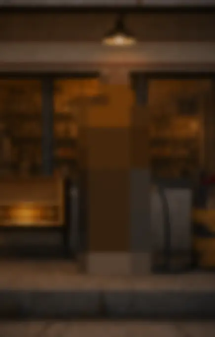
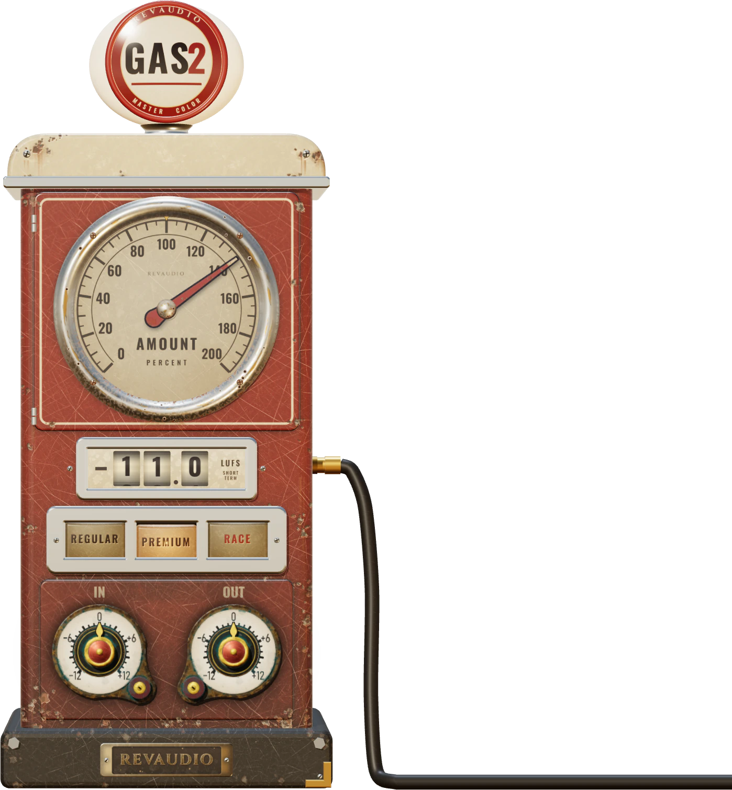

Greetings from GAS 2
Thicker, smoother, glued master.
GAS 2 · FREENo. 1


Thicker, smoother, glued master.
Smooth and warm. For mixes that are already good.
Thick lows, clear mids, silky air.
Punchy and bright. For loud, modern mixes.
The same song, the same level.
One side is GAS 2.
The demo didn't load. Tap the record to try again.
Same song, same loudness: switch while it plays
All three grades · free
Drop me in the box: we'll mail you the download link. No licence key, no card.